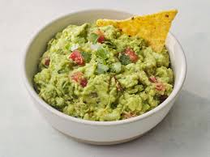

Home
Guacamole

Description
This homemade guacamole combines zesty lime juice, fresh cilantro, minced garlic, cayenne pepper, onions and tomatoes for a falvourful dip. It's the perfectly accompanied with chips, tacos or any mexican inspired dish.
Ingredients
- 3 avocados-peeled, pitted andd mashed
- 1 lime, juice
- 1 teaspoon salt or to taste
- 2 roma (plum) tomatoes, diced
- 1/2 cup diced onion
- 3 tablespoons chopped fresh cilantro
- 1 teaspoon minced garlic
- 1 pinch cayenne pepper (Optional)
Steps
- Gather all ingredients.
- Mash avocados, lime juice, and salt together in a medium bowl; mix in tomatoes, onion, cilantro, and garlic.
- Stir in cayenne pepper. Serve immediately, or cover and refrigerate for 1 hour for improved flavor.